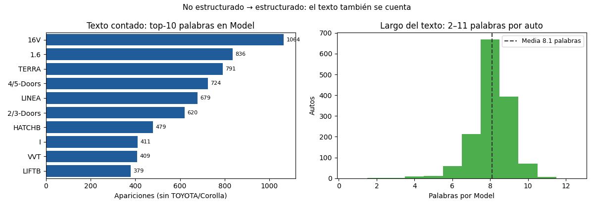

Unidad 3 · Visualización de datos · Lección 0014
Mapas, texto y dos visualizaciones
Win de hoy: distinguir visualización de información vs científica, entender qué piden los
mapas (y por qué Toyota no da), y convertir el texto de Model en barras contables.
1 · Dos visualizaciones: abstracta vs física
- Visualización de información: datos abstractos, sin forma física: tablas, redes, jerarquías. Todo lo hecho en U3 (barras, scatters, heatmaps, la red 0013) vive acá: el diseñador elige la geometría.
- Visualización científica: datos con geometría real: un mapa respeta continentes, un corte médico respeta el cuerpo. Acá la geometría viene dada; el diseñador elige qué pintar sobre ella.
2 · Mapas: temáticos, GIS y por qué Toyota no da
Un mapa temático
pinta una variable sobre territorios (precio medio por provincia, coroplético). Un
GIS
apila esas capas con coordenadas. Requisito innegociable: coordenadas (lat/lon o región por fila).
Toyota no trae ninguna (ni ciudad ni provincia del aviso), así que no hay mapa honesto posible con
este CSV: inventar ubicaciones sería el pecado de la 0011. Si el dataset trajera ciudad, el camino sería
groupby("ciudad") → coroplético. Dos primos del programa, en una línea cada uno:
- Mapas de Kohonen (SOM): red neuronal que aplana muchas dimensiones a una grilla 2D donde vecinos = parecidos. Idea prima de PCA (U7).
- Galaxias (de noticias): documentos como estrellas: cerca = tema parecido. La misma idea que la red 0013, con textos.
3 · No estructurados: el texto también se cuenta
Datos no estructurados
(texto libre) no entran directo a un gráfico: primero se estructuran. Con Model alcanza tokenizar
(partir en palabras) y contar. Sin marca (TOYOTA/Corolla están en todas): 16V 1064,
1.6 836, TERRA 791, 4/5-Doors 724… y cada texto mide 2–11 palabras
(media 8,1). De frase a tabla en 3 líneas:
from collections import Counter
c = Counter()
for m in df["Model"].str.lstrip("?").str.split():
c.update(t for t in m if t not in ("TOYOTA", "Corolla"))
print(c.most_common(5)) # 16V, 1.6, TERRA, 4/5-Doors, LINEA4 · Figura: Model, contado y medido

Model (16V manda con 1064). Derecha: largo del
texto por auto (2–11 palabras, media 8,1). Lo no estructurado, estructurado.Regenerar la figura (mismo resultado versionado en assets/img/toyota/):
python scripts/make_figures.py --only mapas-texto-dos-visualizaciones5 · Quiz (auto-chequeo inmediato)
6 · Fuente primaria y cierre
Para profundizar (1 fuente): McKinney, Python for Data Analysis — capítulos de limpieza y métodos de texto (wesmckinney.com/book, también en RESOURCES.md del curso).
¿Algo no quedó claro? Preguntame al agente: qué visualización pide tu dato, qué necesita un mapa honesto, o cómo estructurar tu propio texto. Esa pregunta vale más que releer.